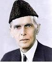
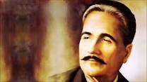

 Muhammad Ali Jinnah (born Mahomedali Jinnahbhai; 25 December 1876 – 11 September 1948) was a barrister, politician and the founder of Pakistan.[2] Jinnah served as the leader of the All-India Muslim League from 1913 until Pakistan's creation on 14 August 1947, and then as Pakistan's first Governor-General until his death. He is revered in Pakistan as Quaid-i-Azam ("Great Leader") and Baba-i-Qaum, ("Father of the Nation"). His birthday is considered a national holiday in Pakistan.Born at Wazir Mansion in Karachi, Jinnah was trained as a barrister at Lincoln's Inn in London. Upon his return to British India, he enrolled at the Bombay High Court, and took an interest in national politics, which eventually replaced his legal practice. Jinnah rose to prominence in the Indian National Congress in the first two decades of the 20th century. In these early years of his political career, Jinnah advocated Hindu–Muslim unity, helping to shape the 1916 Lucknow Pact between the Congress and the All-India Muslim League, in which Jinnah had also become prominent. Jinnah became a key leader in the All India Home Rule League, and proposed a fourteen-point constitutional reform plan.
 Muhammad Iqbal (KB) (/ˈɪkbɑːl/; Urdu: محمد اِقبال; 9 November 1877 – 21 April 1938), widely known as Allama Iqbal, was a poet, philosopher and politician, as well as an academic, barrister and scholar[1][2] in British India who is widely regarded as having inspired the Pakistan Movement. He is called the "Spiritual Father of Pakistan."[3] He is considered one of the most important figures in Urdu literature,[4] with literary work in both Urdu and Persian. Iqbal is admired as a prominent poet by Indians, Pakistanis, Iranians, Bangladeshis and other international scholars of literature.[5][6][7] Though Iqbal is best known as an eminent poet, he is also a highly acclaimed "Muslim philosophical thinker of modern times".[2][7] His first poetry book, The Secrets of the Self, appeared in the Persian language in 1915, and other books of poetry include The Secrets of Selflessness, Message from the East and Persian Psalms. Amongst these, his best known Urdu works. of poetry include The Secrets of Selflessness, Message from the East and Persian Psalms. Amongst these, his best known Urdu works.Amongst these, his best known Urdu works.his best known Urdu works
 Nawabzada Liaquat Ali Khan (Næʍābzādāh Liāqat Alī Khān About this soundlisten (help·info),Urdu: لِیاقت علی خان ; 1 October 1895 – 16 October 1951), widely known as Quaid-e-Millat (Leader of the Nation) and Shaheed-e-Millat[1] (Urdu: شہِیدِ مِلّت Martyr of the Nation), was one of the leading founding fathers of Pakistan,[2] statesman, lawyer, and political theorist who became the first Prime Minister of Pakistan; he also held cabinet portfolio as the first foreign, defence, and the frontier regions minister from 1947 until his assassination in 1951.[2][2] Prior to the partition, Khan briefly tenured as the first finance minister in the interim government led by its Governor General Mountbatten.He was born into an influential aristocratic Muslim family in Karnal, Eastern Punjab on 1 October 1895.[3] Liaquat Ali Khan was educated at the Aligarh Muslim University in India, and then at Oxford University in the United Kingdom.[citation needed] Well-educated, he was a democratic political theorist who promoted parliamentarism in India. After first being invited by the Congress Party, he opted for the Muslim League led by influential Mohammad Ali Jinnah who was advoca.
Nawabzada Liaquat Ali Khan (Næʍābzādāh Liāqat Alī Khān About this soundlisten (help·info),Urdu: لِیاقت علی خان ; 1 October 1895 – 16 October 1951), widely known as Quaid-e-Millat (Leader of the Nation) and Shaheed-e-Millat[1] (Urdu: شہِیدِ مِلّت Martyr of the Nation), was one of the leading founding fathers of Pakistan,[2] statesman, lawyer, and political theorist who became the first Prime Minister of Pakistan; he also held cabinet portfolio as the first foreign, defence, and the frontier regions minister from 1947 until his assassination in 1951.[2][2] Prior to the partition, Khan briefly tenured as the first finance minister in the interim government led by its Governor General Mountbatten.He was born into an influential aristocratic Muslim family in Karnal, Eastern Punjab on 1 October 1895.[3] Liaquat Ali Khan was educated at the Aligarh Muslim University in India, and then at Oxford University in the United Kingdom.[citation needed] Well-educated, he was a democratic political theorist who promoted parliamentarism in India. After first being invited by the Congress Party, he opted for the Muslim League led by influential Mohammad Ali Jinnah who was advoca.